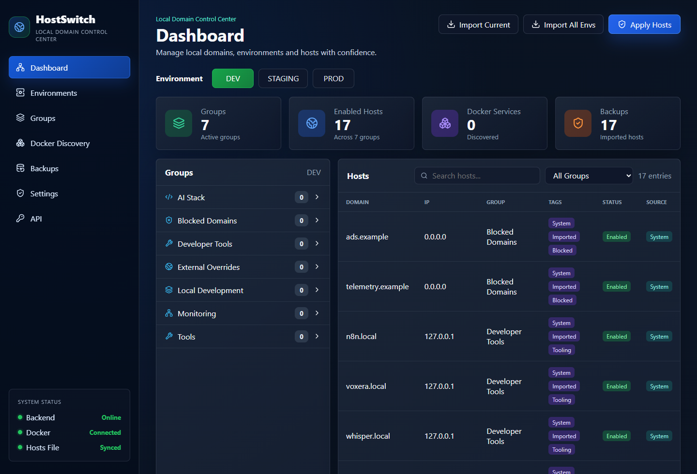
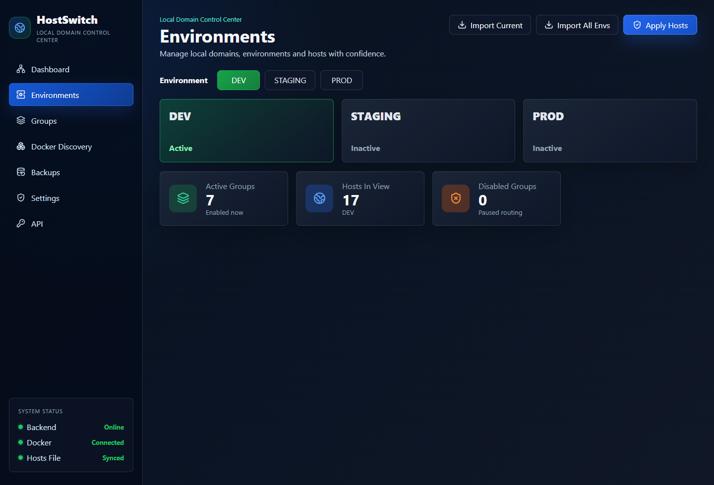
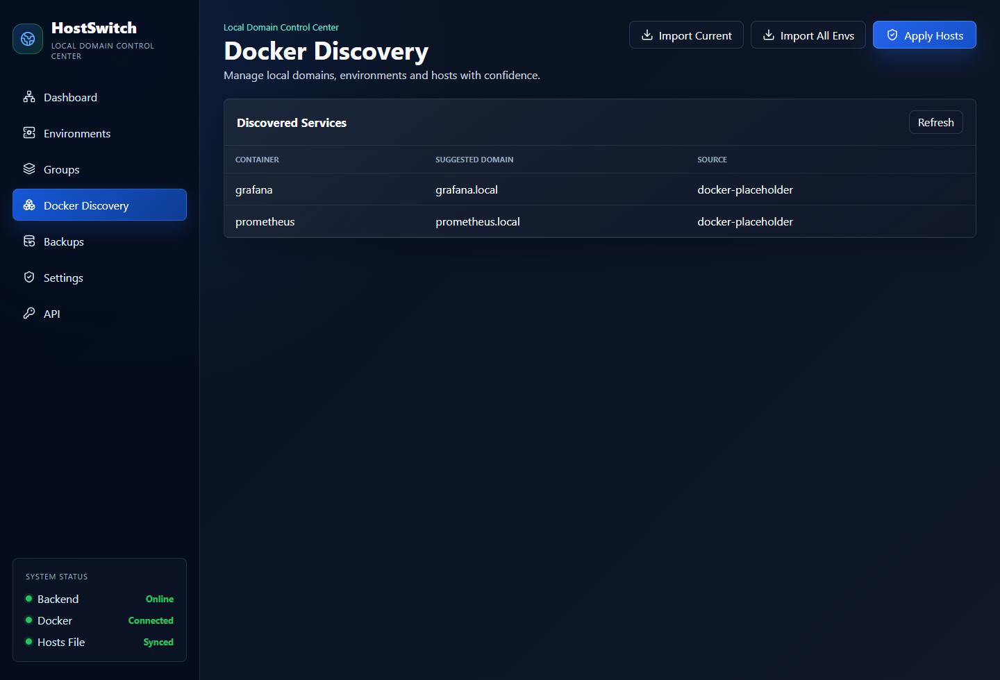
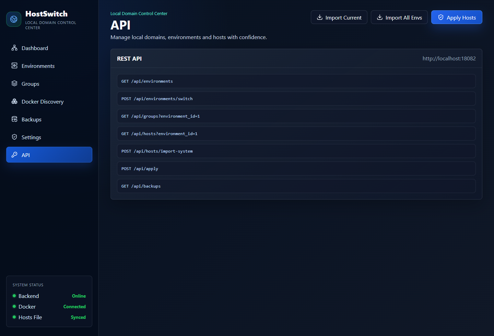

Switch DEV, STAGING, and PROD
Keep domain routing organized by environment and apply only the entries you intend to activate.
Hosts, environments, Docker discovery, and backups
HostSwitch gives developers and DevOps teams a safer control center for local domains, environment switching, Docker-aware routing, and repeatable hosts file updates.

built-in environments
local persistence
deployment ready
automation first
What it manages
Keep domain routing organized by environment and apply only the entries you intend to activate.
Group AI stacks, monitoring, tools, local overrides, external routes, and blocked domains.
Load the current hosts file into SQLite with validation, source tracking, and useful tags.
Create automatic and manual backups before managed hosts output is applied.
Find running containers and turn service names into suggested local domains.
Use REST endpoints for environment switching, imports, group toggles, applies, and backups.
Product preview



Run it locally
./scripts/bootstrap.ps1 -Task dev./scripts/bootstrap.ps1 -Task test./scripts/bootstrap.ps1 -Task ui-smoke
The dev setup writes to data/hosts.preview, so you can test imports,
applies, backups, and UI workflows without touching the real system hosts file.